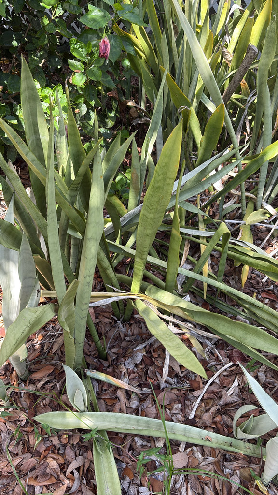

- Snake Plants are sprinkled all around the park in many shapes and sizes — spotting them in their variety makes a fun scavenger hunt as you walk.
- Famous as the nearly indestructible houseplant, it survives deep shade, drought, and neglect that would kill almost anything else.
- For years it was the well-known Sansevieria; DNA evidence in 2017 moved it into Dracaena, the genus of the dragon trees and lucky bamboo.
- There's a dedicated patch just past the front gate planted by Bright Futures high school volunteers — for some, the very first plant they learned to recognize.
Native to tropical West Africa, from Nigeria east to the Congo, where it grows in dry, rocky ground. Now one of the most widely grown houseplants on Earth, kept in nearly every climate for its toughness and striking upright form.
- The Snake Plant is the plant that refuses to die. It tolerates deep shade or bright sun, goes weeks without water, and asks for almost nothing — which is why it's a fixture of offices, lobbies, and first-time plant owners' windowsills worldwide.
- Its stiff, banded, sword-shaped leaves give it its other old name, mother-in-law's tongue, while the tough leaf fibers earned it 'viper's bowstring hemp' — they were genuinely strong enough to string bows.
- It also carries a famous reputation worth handling honestly. NASA's 1989 Clean Air Study found the Snake Plant removed several common indoor pollutants (formaldehyde, benzene, and others) in a sealed laboratory chamber.
- That made it a marketing legend as an 'air-purifying plant' — but later analysis showed the filtration rate is far too slow to meaningfully clean the air of a real room; you'd need dozens or hundreds of plants per room to matter. It's a wonderful, resilient plant; just not a working air filter.
- A note on its name: for decades this was Sansevieria trifasciata, a name still everywhere in the nursery trade. In 2017, DNA studies showed Sansevieria was nested within the genus Dracaena, so it was reclassified as Dracaena trifasciata — placing the humble snake plant among the dragon trees and lucky bamboo.
- At Palma Sola, Snake Plants turn up all over in different forms and sizes, so they make a good spot-them-as-you-go exercise.
- One patch has a story: just past the front gate, down the footpath to the left and beyond the big Staghorn Fern on the right, Bright Futures high school volunteers spent a couple of hours planting out extra nursery stock.
- The patch is regularly maintained, and for several students it was the first plant they ever learned to identify — some have since reported back that now they see snake plants everywhere they go. That's the Baader-Meinhof phenomenon (the 'frequency illusion'): once your brain learns a pattern, it starts noticing it constantly. A first plant well learned is a small superpower.
As a non-native succulent, the Snake Plant isn't a major wildlife plant, but it isn't idle either. When it blooms — usually after a spell of stress — it sends up tall spikes of greenish-white tubular flowers that are strongly fragrant at night and rich in nectar, drawing moths and other night pollinators. Its dense, spreading clumps of stiff leaves give ground-level cover to lizards and insects.
Outdoors in a mild climate like Florida's, those same vigorous rhizomes mean it can spread into colonies, so its modest wildlife value comes paired with a need to keep it contained.
Spreads steadily by creeping underground rhizomes, forming dense colonies; also propagated by division or leaf cuttings. (Leaf cuttings lose the yellow leaf-edge variegation — only division keeps it.)
Occasional tall spikes of slender greenish-white tubular flowers, strongly night-fragrant, attracting moths. Blooming is sporadic and often follows stress.
Stiff, upright, sword-shaped, dark green with paler gray-green cross-banding; many forms have yellow leaf margins. The banding suggests snakeskin — the source of the common name.
Upright, architectural, clump-forming, slowly expanding outward by rhizome.
As you walk the park, play spot-the-snake-plant — note how much they vary in size, leaf width, and the amount of yellow edging. The student-planted patch is just past the front gate: take the footpath to the left, go beyond the big Staghorn Fern on the right, and you'll find it. Look for the snakeskin cross-banding on the stiff upright leaves, and if you're lucky, a fragrant flower spike.
Don't eat this plant — it contains saponins that cause nausea, vomiting, and diarrhea, and the sap can mildly irritate skin. Symptoms are usually mild, but keep children from chewing on it.
It's ASPCA-listed as toxic to dogs, with the same saponins causing drooling, vomiting, and diarrhea if chewed.
The effects are usually mild and self-limiting, but discourage pets from gnawing the leaves.
- © Randall Carter (CC-BY-NC), via iNaturalist